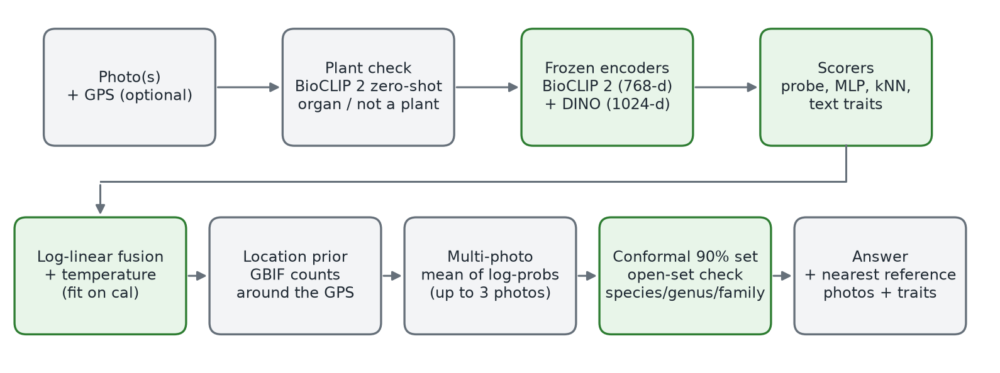
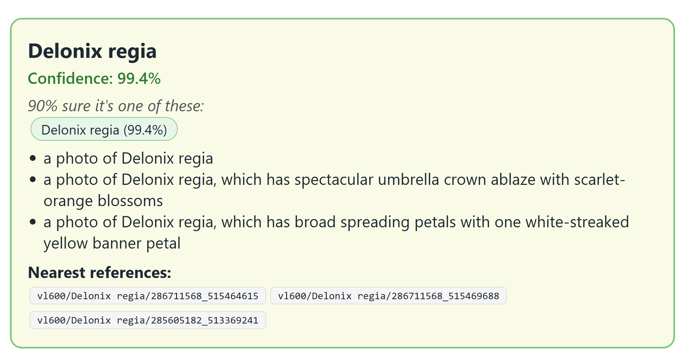
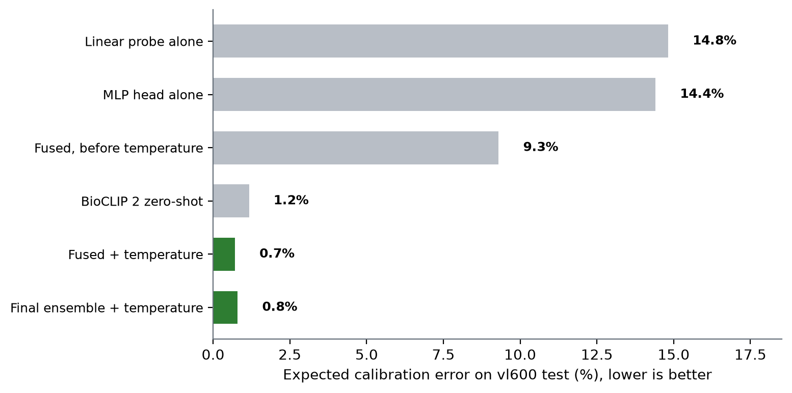
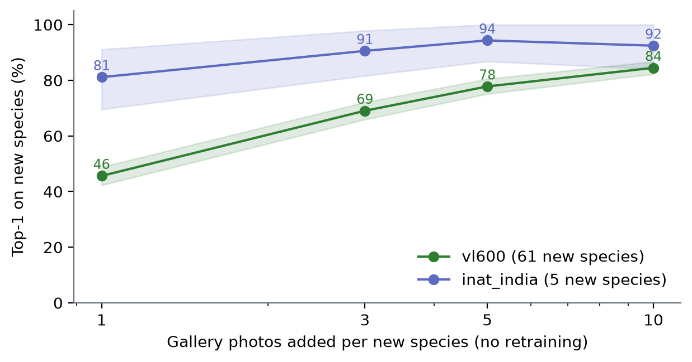

Evidence-backed, uncertainty-aware plant species identification from phone photos, built on frozen foundation models with no fine-tuning
Summary. VanaLens names a plant from one to three ordinary photos (leaf, flower, fruit, bark or whole plant) and says how sure it is. It never fine-tunes a network. Two frozen image encoders (BioCLIP 2 and DINO) turn each photo into a feature vector; small heads, a nearest-neighbour gallery and text descriptions of visual traits score every species; their votes are fused, calibrated, adjusted by what grows near the photo's GPS location, and turned into a species, genus or family answer with a 90% prediction set, reference photos and matched traits. On vl600, a new dataset of 607 common Indian and worldwide species whose test photos were all taken after BioCLIP 2's training data was collected, VanaLens reaches 93.9% (95% CI 93.4 to 94.3) top-1 from a single photo with location, and 95.8% (95% CI 95.4 to 96.2) when up to three photos of the same plant are combined. A new species can be added from five photos without retraining, with 77.8% top-1 on 61 species the model never saw. We report every number with a 95% bootstrap confidence interval, and we are explicit about what does not work yet, notably the open-set reject and a feature-loading bug that is described in Section 3.11.
India has more than 18,000 species of flowering plants, and the people who most often need a plant name are not botanists: a farmer checking a weed, a student on a field trip, a buyer of raw medicinal herbs who wants to know that the leaves in the sack are the species on the label, a forest guard logging what grows along a transect. Existing apps answer with a single name and a percentage. When the photo is ambiguous they still give one confident name, they rarely show why, and their confidence numbers are not calibrated: "90%" does not mean right nine times out of ten. Adding a local species usually means waiting for the vendor to retrain.
This report describes how VanaLens works (Sections 2 and 3), the data (Section 4), how we evaluated it (Section 5), what we measured (Section 6), what is still weak (Section 7) and what we will do about it (Section 8).
This section follows one prediction from photo to answer, without equations. Figure 1 shows the same steps.

1. The user takes photos. Say a student photographs a flowering shrub by a road in Bhopal: one photo of the flower cluster and one of a leaf. The phone stores the GPS position in the photo.
2. Is it a plant at all? The first check compares the photo with short text descriptions ("a photo of a leaf", "a photo of a flower", ..., "not a plant") using BioCLIP 2, a model trained on images and names from across the tree of life. This also tells the app which organ it is looking at.
3. Turn each photo into numbers. Two frozen encoders read each photo. BioCLIP 2 produces a 768-number summary that captures what kind of organism it is; DINO, a general self-supervised vision model, produces a 1024-number summary of fine visual detail (texture, venation, margins). Neither model is changed by us. The two summaries are joined into one 1792-number vector per photo.
4. Ask several experts. Four scorers look at that vector and each give a probability for every species in the catalogue:
5. Combine and calibrate. The scorers' opinions are combined by a weighted vote on the log scale, with weights chosen on a held-out calibration split. A single temperature number then rescales the result so that a stated 80% is right about 80% of the time.
6. Use the location. From the photo's GPS, VanaLens looks up how often each species has been recorded nearby in GBIF, the global biodiversity database, and gently boosts plants that are common there and lowers plants that are not. A look-alike from another continent drops down the list.
7. Combine photos of the same plant. The flower photo and the leaf photo give two probability lists; VanaLens averages them on the log scale, so a species must look right in both photos to stay on top.
8. Decide what to say. From the final probabilities VanaLens builds a 90% prediction set (a list of species that contains the true one at least 90% of the time), checks whether the photo is close enough to anything in the gallery to be a known species at all (open-set check), and picks the deepest rank it is confident about: the species if one species has at least 60% of the probability, otherwise the genus, otherwise the family.
9. Show the evidence. The answer is shown with its calibrated confidence, the prediction set, the three nearest reference photos from the gallery and the traits that matched best (Figure 2). If the set holds more than one species, an optional vision-language model can choose among the short list; that step needs an API key and was not used in the results below.

Fine-tuning a large vision model on a few hundred species is the obvious approach, and it was ruled out for four reasons. First, it is slow and needs more GPU memory than a 6 GB laptop card has for ViT-L models. Second, every new species would mean another training run, while a frozen-feature system can add a class by adding vectors. Third, recent evidence favours frozen features with light heads: the DINOv3 model card recommends frozen features first, and strong PlantCLEF teams use frozen DINOv2 backbones with small heads. Fourth, frozen encoders keep each part inspectable: the gallery neighbours and matched traits are real explanations of what the model compared. Everything we fit (two heads, fusion weights, one temperature, one conformal threshold, one location weight, one open-set threshold) is small and is chosen on a calibration split, never on test.
BioCLIP 2 (hf-hub:imageomics/bioclip-2, ViT-L/14, 768-d) is a CLIP-style model trained on TreeOfLife-200M, 214 million organism images with their full taxonomic names. It has both an image and a text tower, which is what makes zero-shot naming and text-trait prototypes possible. DINO supplies the second, purely visual view. The design uses DINOv3 ViT-L/16 (1024-d), but its weights are gated on Hugging Face and no licence acceptance was available during the build, so the documented fallback facebook/dinov2-large (also 1024-d) is used. Images are encoded in fp16 with horizontal-flip test-time augmentation; for the gallery we also store two augmented views per photo to give the heads more training rows. Each encoder's block is L2-normalised on its own before the two are concatenated.
The linear probe is a multinomial logistic regression on the 1792-d vector, trained in PyTorch with AdamW on the gallery photos (plus their augmented views) and early-stopped on the calibration split. The MLP adds one hidden layer of 1024 units with ReLU and dropout 0.5. For both, weight decay, label smoothing and class-balanced loss weights are chosen by a small grid search on calibration top-1. The trained heads are saved as plain arrays, so inference needs only numpy.
The gallery holds every reference photo's vector. For a query, the top k = 10 neighbours by cosine similarity each add exp(similarity / 0.05) to their species' score, which is then normalised. The gallery has three jobs even when its fusion weight is small: it supplies the evidence photos, its best similarity is the open-set score, and it is where new species are added.
Following "classification by description" (Menon and Vondrick, 2023), each species gets several prompts of the form "a photo of Ocimum tenuiflorum, which has trait" plus a plain "a photo of Ocimum tenuiflorum". The prompts are encoded with BioCLIP 2's text tower and a photo is scored by its similarity to each species' prompts (temperature 0.01). The project has no runtime LLM key, so the trait lists were written in batches by the AI coding assistant used to build the project (an LLM), without expert review; species it did not reach fall back to a taxonomic prompt ("a photo of family genus species, common name"). This scorer needs no training images at all, and its best-matching prompts are the "matched traits" shown to the user.
Scorer outputs are combined by log-linear pooling, P = softmax(sum of w_i log P_i), with weights searched on a simplex grid (step 0.1) to maximise calibration-split top-1, ties broken by lower negative log-likelihood. A weight of zero removes a scorer. On vl600 the calibration split chose the "ensemble" configuration; the four-scorer ensemble uses weights knn 0, probe 0.1, mlp 0.7, text 0.2 and the three-scorer fusion knn 0, probe 0.8, text 0.2. A single temperature T, chosen on the calibration split by negative log-likelihood (0.641 on vl600), then rescales the fused probabilities. Temperature scaling does not change which species ranks first; it only makes the confidence honest.
For a 90% guarantee (alpha = 0.1) we use split conformal prediction: on the calibration split compute the score 1 minus the probability of the true species, and take its ceil((n+1)(1-alpha))/n quantile, q-hat (0.164 on vl600). At test time the set holds every species with probability at least 1 minus q-hat, and always the top species. If calibration and test photos are exchangeable, the set contains the true species at least 90% of the time.
A photo whose best gallery cosine similarity falls below a threshold is flagged as possibly "not in our catalogue". The threshold is the 5% quantile of the best similarity of known-species calibration photos, so 95% of known calibration photos pass. Section 6.6 shows that this simple rule is the weakest part of the system.
Species probabilities are summed into genus and family probabilities using the taxonomy in labels.json. VanaLens reports the deepest rank whose best probability is at least 0.6: species, else genus, else family, else "unknown". A correct genus is useful (many medicinal look-alikes are congeners), and it is better than a wrong species.
For a photo with GPS, GBIF's occurrence search returns the number of plant records per species within a radius of the point; results are cached per 0.5 degree cell. The prior for species c is its count plus a smoothing constant, normalised; species without a GBIF key get only the smoothing. The final probability is P times prior to the power beta, renormalised. Beta is picked from a small grid by negative log-likelihood on the calibration split: 0.5 on vl600 and 0.75 on inat_india. Beta = 0 would switch the prior off.
For up to three photos of one plant, VanaLens averages the calibrated per-photo log-probabilities, renormalises, and applies the location prior once. Averaging (rather than summing) keeps the confidence on the same calibrated scale whatever the number of photos.
add_species embeds the new photos, appends them to the kNN gallery and adds a "a photo of <species>" text prototype. The heads were trained before the species existed, so for new classes they defer to the gallery: the probability mass the gallery gives to new species is passed through and the heads' own probabilities are scaled down to make room. Nothing is retrained.
During the build we found that DINO's contribution was broken. DINOv2-large weights are loaded by a custom safetensors loader, and after a transformers upgrade renamed the attention parameters, that loader silently skipped 192 of 439 tensors, all of them attention weights. The DINO half of every cached embedding therefore came from a network with random attention, and it did not even match the live encoder (cosine similarity between live and cached DINO vectors 0.3 to 0.58, against 1.00 for BioCLIP 2). Two visible symptoms were that the fusion weight search gave kNN, which uses the full vector, a weight of zero, and that the live app rejected about 95% of known photos as "not in catalogue" because live DINO vectors were far from the gallery. The fix loads the weights through the standard transformers path with a test that every tensor is loaded, then recomputes the DINO block of every cache and refits everything downstream.
vl600 was built for this project automatically from iNaturalist (Table 1). Species are chosen by observation count only, with no hand-picking: (a) the 400 most-observed research-grade plant species in India, (b) the 200 most-observed plant species worldwide that are not already in (a), and (c) a fixed list of common Indian plants (tulsi, neem, hibiscus, mango, peepal, banyan, curry leaf and others) resolved to accepted iNaturalist names, of which 7 were not already covered. The resulting 607 species account for 71.6% of all research-grade plant observations in India.
For each species we took up to 80 photos observed before 1 July 2025 for the gallery and calibration splits, and up to 15 observations made on or after 1 July 2025 (up to 3 photos each) for the test split, preferring Indian observations and filling from worldwide ones. BioCLIP 2's training data was collected before that date, so the test photos cannot be in its training set; this matters because BioCLIP 2 is trained on GBIF and iNaturalist images, and an older test photo might have been seen during pre-training. Only photos licensed CC0, CC BY or CC BY-NC are used. Pre-cutoff observations are split 80/20 into gallery and calibration by observation, so two photos of the same plant never end up on both sides; the test split is defined by date alone. Every species has at least 5 test observations (0 species fall short).
| vl600 (main) | inat_india | |
|---|---|---|
| Species | 607 (400 India, 200 world, 7 common-Indian extras) | 52 (Madhya Pradesh) |
| Gallery photos (reference + training) | 38,826 (27,615 obs.) | 692 |
| Calibration photos | 9,710 (6,915 obs.) | 178 |
| Test photos (observed on or after 1 Jul 2025) | 12,831 (9,097 obs.) | 558 (558 obs.) |
| Photos per observation | up to 3 | 1 |
| Size on disk | 9.6 GB | not measured |
| Photo licences | CC BY-NC 81%, CC BY 17%, CC0 2% | CC BY-NC 94%, CC BY 6%, CC0 0% |
| Share of India's research-grade plant observations covered by the species list | 71.6% | not measured |
inat_india was the project's first dataset: the 60 most-observed research-grade plant species in Madhya Pradesh, with GPS on every photo, up to 30 observations before 1 June 2025 (gallery and calibration) and up to 15 observations from 1 July 2025 (test), one photo per observation. Species with fewer than 5 test observations were dropped, leaving 52. It is small, so its confidence intervals are wide, but it is entirely local and every photo has coordinates, which makes it the natural check of the location prior.
Photos and metadata come from iNaturalist through its public API v1 (api.inaturalist.org, at most one request per second) and the photo files from the iNaturalist Open Data bucket on AWS (inaturalist-open-data.s3.amazonaws.com). We do not redistribute the images; each one keeps its observer's licence, and meta.csv records observation id, date, coordinates, licence and source URL for every photo. To rebuild everything from scratch:
python -m eval.build_vl600 (species selection, download, manifests, runs/L1/vl600_stats.json); python scripts/make_manifests.py for inat_india.python scripts/extract_all.py (frozen embeddings for every split, GPU).python scripts/build_traits.py --dataset vl600 (text prototypes) and python scripts/fit_core.py --dataset vl600 (heads, fusion, temperature, conformal, open-set threshold).python -m vanalens.pipeline fit-beta --dataset vl600 (location prior strength), then python scripts/final_table.py (all tables with CIs, runs/L6/final.json).All choices (head hyper-parameters, which head is the default, fusion weights, temperature, conformal q-hat, open-set threshold, location beta, selective threshold) are made on the calibration split. The test split is only evaluated, once per configuration. The numbers in Section 6 are computed from the cached frozen embeddings through the same code the live app runs (VanaLens.scores, then VanaLens.combine, then the conformal set and backoff), so the table and the app agree by construction.
Every VanaLens number carries a 95% percentile bootstrap interval from 1,000 resamples of test observations (not photos, since photos of one plant are correlated), seed 0. One resample matrix is shared by all metrics of a dataset. Baseline numbers come from result files without per-photo predictions, so they are point values.
runs/L6/final.json this row is labelled "B2 BioCLIP 2 kNN"; the script that produced it, scripts/baseline_bioclip.py, runs zero-shot classification.)B1 (Pl@ntNet-300K ResNet weights) was disabled from the start to save time, and the campus photo set did not arrive, so it is skipped.
The numbers in this version of the report were computed BEFORE that fix: the DINO half of every cached embedding was effectively random, so the results below are close to BioCLIP 2 features alone. The fix and a full re-run (cards L2-f, L3-d, L6-d) were in progress when this version was built; rebuilding this report after them refreshes every number and table.
| Method | Top-1 | Top-5 | Macro top-1 | Genus top-1 | Family top-1 | Note |
|---|---|---|---|---|---|---|
| B0 Pl@ntNet API | n/m | n/m | n/m | n/m | n/m | not run: no API key |
| B2 BioCLIP 2 zero-shot, open-ended (tree of life) | 61.6 | 78.5 | n/m | n/m | n/m | point value, no CI |
| B2 BioCLIP 2 zero-shot, closed set (all class names) | 87.3 | 95.4 | 87.8 | 89.3 | 92.0 | point value, no CI |
| B3 linear probe on our embeddings | 92.4 [91.8, 93.0] | 97.6 [97.3, 97.9] | 92.8 [92.4, 93.3] | 93.5 [93.0, 94.0] | 94.8 [94.3, 95.2] | |
| B4 general VLM, open-ended | n/m | n/m | n/m | n/m | n/m | not run: no LLM key |
| VanaLens, 1 photo, no location | 93.3 [92.8, 93.8] | 97.9 [97.6, 98.2] | 93.6 [93.2, 94.0] | 94.3 [93.8, 94.7] | 95.2 [94.8, 95.7] | |
| VanaLens, 1 photo + location prior | 93.9 [93.4, 94.3] | 98.2 [97.9, 98.4] | 94.2 [93.8, 94.6] | 94.7 [94.3, 95.2] | 95.6 [95.2, 96.0] | |
| VanaLens, up to 3 photos + location | 95.8 [95.4, 96.2] | 99.0 [98.9, 99.2] | 95.8 [95.4, 96.2] | 96.6 [96.2, 96.9] | 97.2 [96.8, 97.5] | per observation |
| VanaLens + VLM reranker | n/m | n/m | n/m | n/m | n/m | not run: no LLM key |

On vl600, the single-photo system with location reaches 93.9% (95% CI 93.4 to 94.3) top-1 and 98.2% (95% CI 97.9 to 98.4) top-5. This is 6.6 points higher than BioCLIP 2 zero-shot over the same 607 names; relative to BioCLIP 2's open-ended guess over its whole tree of life (61.6%) the gain is much larger, which is the gap between "name this organism" and "choose from a curated regional flora with a gallery". Family-level accuracy is 95.6% (95% CI 95.2 to 96.0).
| Method | Top-1 | Top-5 | Macro top-1 | Genus top-1 | Family top-1 | Note |
|---|---|---|---|---|---|---|
| B0 Pl@ntNet API | n/m | n/m | n/m | n/m | n/m | not run: no API key |
| B2 BioCLIP 2 zero-shot, open-ended (tree of life) | 70.4 | 83.5 | n/m | n/m | n/m | point value, no CI |
| B2 BioCLIP 2 zero-shot, closed set (all class names) | 93.5 | 99.1 | 92.8 | 94.1 | 94.3 | point value, no CI |
| B3 linear probe on our embeddings | 88.9 [86.4, 91.4] | 97.9 [96.4, 98.9] | 87.0 [84.1, 89.7] | 89.4 [86.9, 91.8] | 90.1 [87.6, 92.5] | |
| B4 general VLM, open-ended | n/m | n/m | n/m | n/m | n/m | not run: no LLM key |
| VanaLens, 1 photo, no location | 96.8 [95.3, 98.2] | 99.5 [98.8, 100.0] | 96.0 [94.2, 97.8] | 97.3 [95.9, 98.6] | 97.5 [96.1, 98.8] | |
| VanaLens, 1 photo + location prior | 96.1 [94.4, 97.7] | 99.5 [98.8, 100.0] | 94.7 [92.5, 96.7] | 96.6 [95.0, 98.0] | 96.8 [95.2, 98.2] | |
| VanaLens, up to 3 photos + location | 96.1 [94.4, 97.7] | 99.5 [98.8, 100.0] | 94.7 [92.5, 96.7] | 96.6 [95.0, 98.0] | 96.8 [95.2, 98.2] | per observation |
| VanaLens + VLM reranker | n/m | n/m | n/m | n/m | n/m | not run: no LLM key |
On inat_india the single-photo system reaches 96.8% (95% CI 95.3 to 98.2) without location and 96.1% (95% CI 94.4 to 97.7) with it. The intervals are wide (only 558 test observations).
| Component | Top-1 | Top-5 | NLL | ECE | Cal top-1 |
|---|---|---|---|---|---|
| kNN over the reference gallery | 90.7 [90.0, 91.2] | 96.0 | 1.156 | 2.6 | 92.8 |
| linear probe | 92.4 [91.8, 93.0] | 97.6 | 0.474 | 14.8 | 94.6 |
| MLP head (1 hidden layer) | 92.9 [92.3, 93.4] | 97.5 | 0.463 | 14.4 | 94.9 |
| text-trait prototypes (no training) | 90.0 [89.4, 90.6] | 96.4 | 0.434 | 1.3 | 91.8 |
| log-linear fusion of knn, probe, text | 93.0 [92.5, 93.5] | 97.9 | 0.369 | 9.3 | 95.0 |
| fused + temperature scaling | 93.0 [92.5, 93.5] | 97.9 | 0.284 | 0.7 | 95.0 |
| fused + T + 90% conformal sets | 93.0 [92.5, 93.5] | 97.9 | 0.284 | 0.7 | 95.0 |
| final: probe + MLP + text (+ knn) fused, + T, + sets | 93.3 [92.8, 93.8] | 97.9 | 0.280 | 0.8 | 95.2 |
Table 4 shows what each part contributes on vl600. In the current numbers the trained heads are the strongest single scorers, and the text prototypes, which use no training images, reach 90.0% on their own. Fusion adds a little top-1 over the best single scorer and, more importantly, the temperature step cuts calibration error from 9.3% to 0.7% without changing top-1. The kNN scorer is the weakest here, consistent with the broken DINO half described in Section 3.11: kNN is the only scorer that cannot learn to ignore part of the vector.
| Component | Top-1 | Top-5 | NLL | ECE | Cal top-1 |
|---|---|---|---|---|---|
| kNN over the reference gallery | 81.2 [77.8, 84.2] | 94.3 | 1.729 | 12.2 | 87.6 |
| linear probe | 88.9 [86.4, 91.4] | 97.9 | 1.126 | 49.0 | 84.8 |
| MLP head (1 hidden layer) | 90.5 [88.0, 92.8] | 98.8 | 0.687 | 29.9 | 93.3 |
| text-trait prototypes (no training) | 96.1 [94.4, 97.7] | 99.6 | 0.148 | 2.1 | 91.6 |
| log-linear fusion of knn, probe, text | 96.6 [95.0, 98.0] | 99.5 | 0.154 | 4.6 | 94.9 |
| fused + temperature scaling | 96.6 [95.0, 98.0] | 99.5 | 0.127 | 1.6 | 94.9 |
| fused + T + 90% conformal sets | 96.6 [95.0, 98.0] | 99.5 | 0.127 | 1.6 | 94.9 |
| final: probe + MLP + text (+ knn) fused, + T, + sets | 96.8 [95.3, 98.2] | 99.5 | 0.126 | 1.7 | 95.5 |
On the small inat_india set the text prototypes are, in the current numbers, stronger relative to the trained heads (96.1% against 88.9% for the probe), which is what one expects when the gallery has only about a dozen photos per species: the heads have little to learn from, while the descriptions carry prior knowledge.
Combining up to three photos of the same plant gives the largest single gain in the current numbers. On vl600, going from one photo with location to up to three photos with location raised top-1 by 1.9 points, to 95.8% (95% CI 95.4 to 96.2) (per observation; 2,519 of 9,097 test observations have 2 or 3 photos, the rest one). This matches the botanical literature, where fusing views of different organs raises accuracy sharply. In inat_india every test observation has exactly one photo, so the multi-photo row equals the single-photo row there.
Adding the GBIF prior raised top-1 by 0.6 points on vl600 (beta 0.5) and lowered top-1 by 0.7 points on inat_india (beta 0.75). The prior can only help where look-alikes differ in range: vl600 mixes Indian and worldwide species and its test photos come from several countries, while inat_india is a single Indian state where most candidates are recorded nearby, so its prior carries little information and its effect is within the wide confidence interval.
| Quantity | vl600 | inat_india |
|---|---|---|
| Conformal set coverage (target 90%) | 93.9 [93.4, 94.3] | 96.1 [94.4, 97.7] |
| Mean conformal set size | 1.000 | 1.000 |
| Backoff accuracy at reported rank | 96.8 [96.5, 97.2] | 98.0 [96.7, 99.1] |
| Answers given at species rank | 94.6 [94.2, 95.0] | 96.8 [95.3, 98.2] |
| Selective: threshold on confidence (fit on cal) | 0.085 | 0.354 |
| Selective: accuracy on cal when answered | 95.5 | 95.5 |
| Selective: accuracy on test when answered | 93.9 [93.4, 94.3] | 96.4 [94.8, 97.9] |
| Selective: share of test photos answered | 100.0 [100.0, 100.0] | 99.6 [99.1, 100.0] |
| Calibration error ECE, final head (ablation) | 0.8 | 1.7 |

Three results stand out. First, calibration is good: after temperature scaling the final ensemble's ECE on vl600 is 0.8%, against 14.8% for the linear probe alone (Figure 5). Second, the 90% conformal sets cover the true species 93.9% of the time on vl600 and 96.1% on inat_india, but they are almost always a single species. This is not a success of the sets; it is a property of the threshold rule when the model is already more than 90% accurate (Section 7). Third, the selective threshold chosen on calibration to give 95% accuracy reaches 93.9% (95% CI 93.4 to 94.3) on vl600 test, below the target: the post-cutoff test photos are harder than the pre-cutoff calibration photos, so a threshold tuned on calibration is too permissive on test. Hierarchical backoff, in contrast, works as intended: answers are correct at the reported rank 96.8% (95% CI 96.5 to 97.2) of the time on vl600, at the cost of answering at genus or family level for the rest.
| Quantity | vl600 | inat_india |
|---|---|---|
| Species held out / kept | 61 / 546 | 5 / 47 |
| Test photos of held-out species | 1,328 | 53 |
| Held-out photos rejected (want high) | 52.0 [48.6, 55.2] | 26.4 [15.4, 40.0] |
| Known photos wrongly rejected (want low) | 24.1 [23.2, 25.0] | 6.9 [4.8, 9.4] |
| AUROC of the gate score | 73.8 [72.5, 75.2] | 80.8 [76.2, 85.8] |
| Known-species top-1 after refit | 93.5 [92.9, 94.0] | 96.8 [95.2, 98.2] |
The open-set gate is the weakest component. On vl600, with 61 species removed from the model, it rejects 52.0% (95% CI 48.6 to 55.2) of photos of those species while also wrongly rejecting 24.1% (95% CI 23.2 to 25.0) of photos of known species (AUROC 73.8%). A threshold on one cosine similarity cannot separate a new species from an unusual photo of a known one, and the threshold, set so that 95% of calibration photos pass, does not transfer to the harder test photos. In the live app the gate was even worse before the DINO fix (Section 3.11).
| Shots per new species | vl600: new species | vl600: known after | inat_india: new species | inat_india: known after |
|---|---|---|---|---|
| 1 | 45.6 [42.3, 48.8] | 93.5 [92.9, 93.9] | 81.1 [69.6, 91.1] | 96.8 [95.2, 98.2] |
| 3 | 69.0 [65.9, 72.1] | 93.4 [92.8, 93.8] | 90.6 [81.6, 97.8] | 96.0 [94.3, 97.7] |
| 5 | 77.8 [75.1, 80.5] | 93.3 [92.7, 93.8] | 94.3 [86.8, 100.0] | 96.0 [94.3, 97.7] |
| 10 | 84.5 [82.2, 86.7] | 93.2 [92.7, 93.7] | 92.5 [84.1, 100.0] | 96.0 [94.3, 97.7] |

Adding species is where the frozen-feature design pays off. On vl600, the 61 held-out species reach 45.6% (95% CI 42.3 to 48.8) top-1 from one photo each, 77.8% (95% CI 75.1 to 80.5) from five and 84.5% (95% CI 82.2 to 86.7) from ten, measured over all 607 classes, and accuracy on the known species stays at 93.2% afterwards. No weights change; the operation is an append to the gallery. New species still trail the trained ones, because for them only the gallery and one name prompt vote, not the trained heads or a full trait list.
| Metric | vl600 | reaches 95% | CI low | inat_india | reaches 95% | CI low |
|---|---|---|---|---|---|---|
| single-photo top-1 | 93.9 [93.4, 94.3] | no | no | 96.1 [94.4, 97.7] | yes | no |
| 3-photo top-1 | 95.8 [95.4, 96.2] | yes | yes | 96.1 [94.4, 97.7] | yes | no |
| single-photo top-5 | 98.2 [97.9, 98.4] | yes | yes | 99.5 [98.8, 100.0] | yes | yes |
| 3-photo top-5 | 99.0 [98.9, 99.2] | yes | yes | 99.5 [98.8, 100.0] | yes | yes |
| genus top-1 (1 photo) | 94.7 [94.3, 95.2] | no | no | 96.6 [95.0, 98.0] | yes | no |
| family top-1 (1 photo) | 95.6 [95.2, 96.0] | yes | yes | 96.8 [95.2, 98.2] | yes | yes |
| backoff accuracy at reported rank (1 photo) | 96.8 [96.5, 97.2] | yes | yes | 98.0 [96.7, 99.1] | yes | yes |
| selective accuracy (answered photos) | 93.9 [93.4, 94.3] | no | no | 96.4 [94.8, 97.9] | yes | no |
On vl600 the metrics that reach 95% are: 3-photo top-1, single-photo top-5, 3-photo top-5, family top-1 (1 photo), backoff accuracy at reported rank (1 photo). Those that do not are: single-photo top-1, genus top-1 (1 photo), selective accuracy (answered photos). On inat_india the point values that reach 95% are: single-photo top-1, 3-photo top-1, single-photo top-5, 3-photo top-5, genus top-1 (1 photo), family top-1 (1 photo), backoff accuracy at reported rank (1 photo), selective accuracy (answered photos) (not reaching: none), though with only 558 observations the lower end of the interval falls below 95% for 4 of 8 metrics.
A separate end-to-end run pushes 20 vl600 test observations one by one through the live app code (photo files in, answer out), on CPU. It takes 2.7 s per observation once the models are loaded. Top-1 in that run is 95.0%, but 95.0% of the answers were flagged "not in catalogue". Before the DINO fix, live and cached DINO vectors disagree, so every live photo looks far from the gallery; this is the clearest symptom of the bug in Section 3.11 and the first number to recheck after the fix.
A per-species or per-growth-form breakdown (trees against herbs, grasses, ferns) and a confusion analysis of the hardest look-alike pairs were not measured: the result files store aggregate metrics and the per-photo predictions needed for them are not kept in runs/. The aggregates give one hint: family top-1 is 95.6% against 93.9% at species level on vl600, so 28% of the species errors still land in the right family. The rest are confusions across families, which a per-species analysis should explain first.
| Limitation | Concrete next step |
|---|---|
| 1. DINO features | Land the loader fix with its every-tensor-loaded test (done in L2-f), refit, and report the BioCLIP-only versus BioCLIP+DINO ablation explicitly; accept the DINOv3 licence and swap it in behind the same 1024-d contract. |
| 2. Non-adaptive sets | Replace the threshold rule with adaptive prediction sets (APS/RAPS), report 95% and 98% coverage where sets become informative, and add the prevalence-adjusted score for rare species (Ding et al., 2025) and multi-input conformal aggregation across photos (Fermanian et al., 2025). |
| 3. Weak open-set gate | Combine several signals (gallery similarity, energy of the fused logits, text-prototype margin) in a small detector trained on species held out from the gallery, and calibrate its threshold on post-cutoff data. |
| 4. Calibration shift | Use a recent slice (post-cutoff observations not in test) as the calibration split, and refresh calibration monthly from new observations. |
| 5. Same-source test | Collect a campus and market test set with ordinary phones, including raw-herb photos, and report it separately. |
| 6. Missing baselines | Run B0 (Pl@ntNet API, free tier) and B4 on the inat_india test split, and evaluate the VLM reranker on ambiguous cases only, as designed. |
| 7. Unchecked traits | Have a botanist review the trait lists of the 100 most-confused species first, and generate traits for the remaining species with a reviewed template. |
| 8. Few-shot optimism | Re-run the few-shot test with the real BioCLIP 2 text tower on GPU. |
| 9. Coarse location prior | Replace raw GBIF counts with a learned range model (SINR) and add a month-of-year term. |
| 10. No error analysis | Store per-photo predictions in the cache and add per-species, per-organ and per-growth-form tables plus a confusion list of look-alike pairs. |
| 11. Scale and speed | Grow the catalogue to the top 2,000 Indian species (only gallery photos and traits are needed), and distil to a small on-device encoder. |
Beyond fixing limitations, three features follow naturally from the design:
VanaLens shows that a plant identifier built only from frozen foundation models, small heads and careful calibration can reach high accuracy on hundreds of species while staying honest and extensible. On 607 species with test photos taken after the encoders' training data, it reaches 93.9% top-1 from one photo and 95.8% from up to three, with calibration error of about 0.8%, and it learns a new species from five photos with no retraining. Its answers come with reference photos, matched traits and a genus or family fallback. The weak points are equally clear: a feature-loading bug that kept the second encoder from contributing, prediction sets that do not yet adapt, and an open-set gate that needs a better signal. Each has a concrete fix, and none requires giving up the core idea of frozen encoders with transparent, swappable parts.